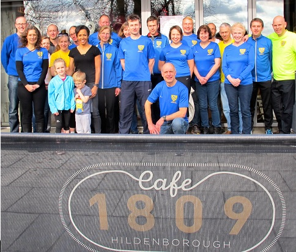

Sevenoaks Athletics Club Presents cheque to Dame Kelly Holmes
Darrell Smith, Race Director of the Sevenoaks 7 presented a cheque for £1250 to Dame Kelly Holmes at Café 1809 in Hildenborough, writes Jim Knight.
The money was raised by Sevenoaks Athletics Club at the 2015 Sevenoaks 7 race, a challenging 7-mile cross-country race held annually in Knole Park.
The club has committed to continue supporting The Dame Kelly Holmes Trust with this year’s race to be held on August Bank Holiday Monday (August 29th) and sponsored by Up & Running, Sevenoaks.
Darrell Smith offered Dame Kelly an entry in this year’s race.
Dame Kelly thanked the club for the donation.
"The money will be used by the Trust to support disadvantaged youngsters through the 'Get on Track' programme" she said.
"The programme has 450 international or ex-international sports people using their unique skills and attitudes to transform the lives of young people and help them into employment, education, or training, whilst at the same time supporting the athletes as they transition from sport.

"So far the Trust has helped over 250,000 young people. 70% of those who have taken part in “Get on Track” have moved into employment, education or training within five months. There are currently three programmes running in Kent and the money will be used to support these."
Dame Kelly admitted to feeling shattered after an 18-mile training run in the morning, as she prepares for the London Marathon, where she is hoping to raise £250,000 for 5 charities (more details on http://uk.virginmoneygiving.com/team/KellysHeroes).
However she was not alone, as several Sevenoaks AC members had also done their long marathon-training runs. Others had taken part in the monthly handicap race or a more gentle run in the park.
If you enjoy running and would like to improve, Sevenoaks AC is offering three training sessions free. Details here.